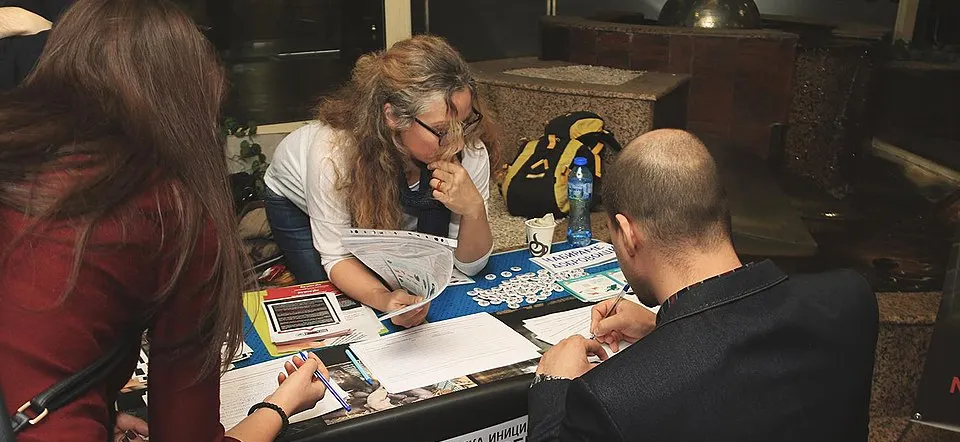
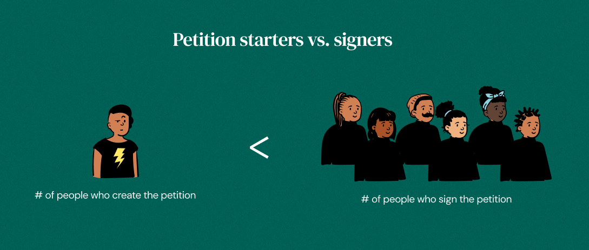
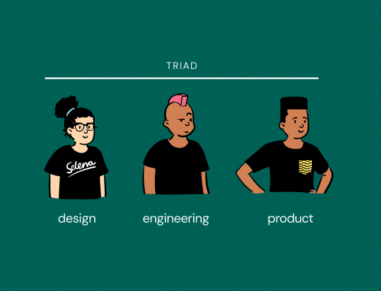
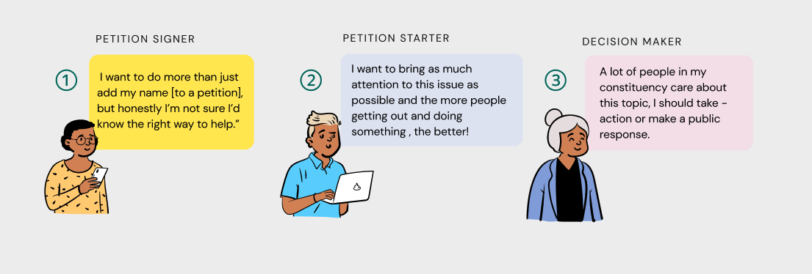
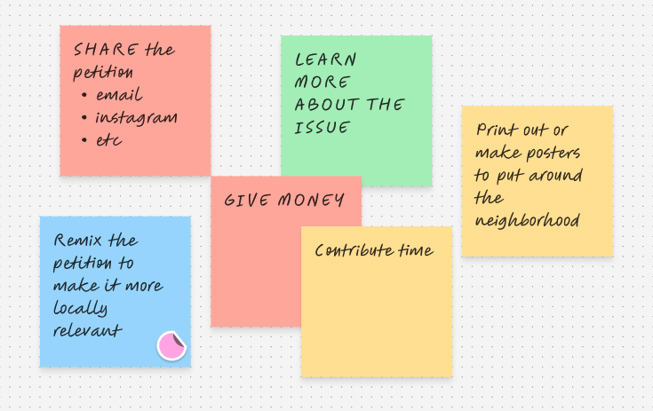
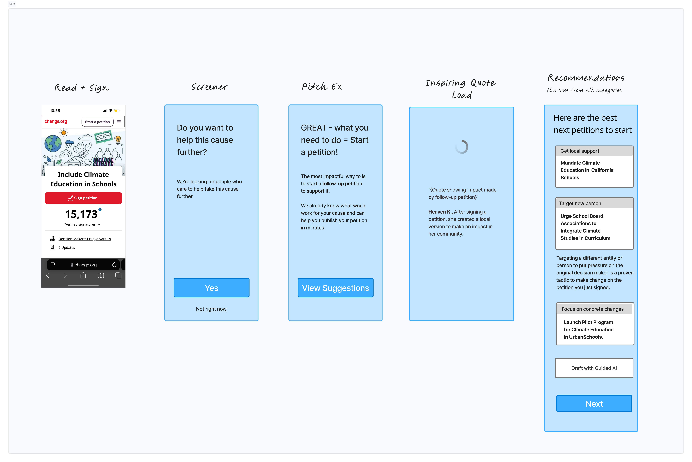
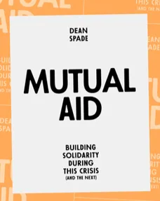
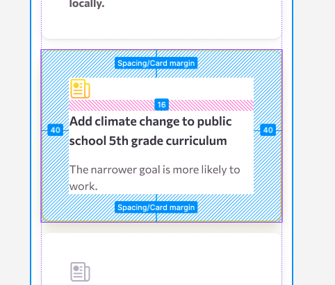
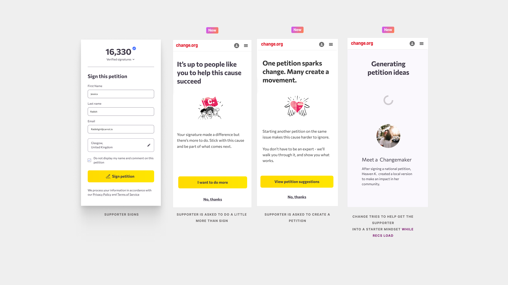
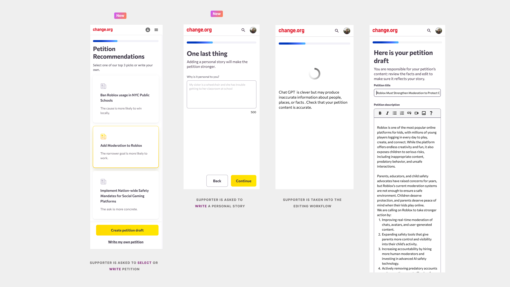

AI Petition Topic Recommendations on change.org

Image Source: Wikimedia Commons

Explore
Opportunity

In general, there are many more people who come to Change.org to sign a petition compared to the number that create one. Change.org focused on creators, but signers were the real untapped audience.
Role and Team

Our core triad was me as the lead designer, partnered closely with our lead engineer and product manager. We made decisions together, but worked in tight collaboration with community consultants and the executive team who shaped priorities and validated direction.
Define
User Stories

Through mixed-methods research with starters, signers, and decision makers, I learned that many signers are willing to start a follow-on petition but hesitate due to confidence gaps, and that decision makers are more likely to act when they hear about an issue repeatedly.
- Research Methods used throughout the project
- analytics dashboard
- segmentation
- co-design workshops
- unmoderated usability testing
- prompt validation
Brainstorming

🧠⚡️ Brainstorm: what actions can supporters take after they are done signing?
Hypothesis
Offering petition signers smart, relevant and data-driven petition topic recommendations, will motivate them to create their own petitions because they will have confidence that it will be successful.
intervention action logic
Make
Lo-Fi Design and Prompt Engineering
JOB TO BE DONE:
**When I**'ve just signed a petition on an issue I care about
**I want to** be prompted with recommended related topics and helped to draft a petition
**So I can** escalate my involvement instead of stopping at a signature
The product triad wrote jobs to be done for every stage in the user journey and identified areas where we could track the drop off rate to determine if this was a successful intervention.

Designing the Recommendations

In addition to talking to career organizers, Mutual Aid provided me with a ton of practical organizing tips.
Three ways to spin a petition topic into a fresh petition:
Scale: Suggest localizing a national or global petition to increase its chances of success.
-
Here’s an example from the prompt
``` Suggest localizing a national or global petition to increase its chances of success.
Example: From “Protect Amazon rainforest globally,” move to “Ban deforestation-linked products in [city].” ```
Target: Target a different person or entity that could pressure the original decision maker.
-
Here’s an example from the prompt
``` Target a different person or entity that could pressure the original decision maker.
Example: From signing “Statewide ban on plastic straws,” suggest “Urge Starbucks to eliminate plastic straws nationally.”
```
Ask: Change ask to be more concrete or reduce scope
-
Here’s an example from the prompt
``` Change ask to be more concrete or reduce scope
Aim to achieve the same overall goal as the original petition, but make the ask more specific, more actionable, or more winnable by reducing scope.
Example: From “Protect students from gun violence” To: “Ban guns in K-12 school zones nationwide” ```
High Fidelity Design

I needed to design a new component card for the recommendations. I made lots of iterations until we got to the final design.
Validate
I simultaneously tested the:
- user flow on usertesting.com with lo-fi mockups
- prompt internally with the vercel prototype.
Final Solution


←Here’s a little walkthrough to see what it felt like. (I also had a little fun playing around with video editing here.)
Impact
77% of supporters opted in to petition creation after the initial ask.
This made it significantly more simple for supporters to write petitions.
Next Steps
There’s a big opportunity to increase the quality of the petitions being created. The next iteration will focus on user education and support to increase not just the rate of petitions being created, but the winnability and impact of them.